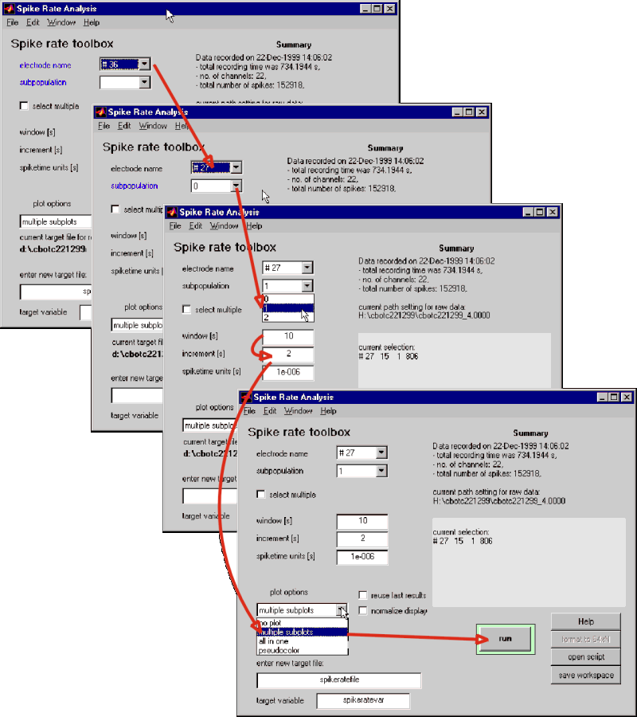

| With the spike rate analysis tool you may calculate spike rates for
one or several electrodes and their subpopulations. For a single electrode
mark the appropriate entries in the pulldown list. The blue text elements
should turn black before pressing the 'run' button. To select several electrode/subpopulations
for one display click on the corresponding checkbox. The GUI opening
as a result allows you to create a list of electrode/subpopulation combinations.
You may further
-
define the window across which rates are calculated and the shift by which
this window should be moved to calculate moving averages across an experiment,
-
select some display styles from the 'plot options' drop-down
list,
-
'reuse last results' speeds up switching between displays,
-
'normalize display' scales the rates such that the maximum is 1.
|
| To evaluate several subpopulations from one electrode press the 'add'
button in the query window. |
| Press the 'done' button to close the selection window. The list will
appear in the primary GUIs info field. |
|
 |